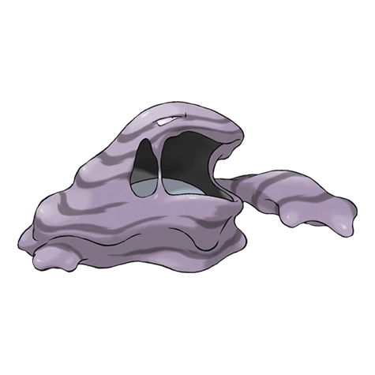

Назад
Макк

Макк — Покемон 1 поколения под номером 89 в Покедекс. Обитает он в регионе Канто и относится к Ядовитому типу. Это последняя стадия эволюции Покемона Граймер. Из тела Макка вытекает отвратительная жидкость, от которой исходит ужасный зловонный запах. Всего одна капля из его тела превращает чистый бассейн в вязкое прогнившее болото.
Тип:
Ядовитый
Эволюция
# 089 Макк
Финальная стадия